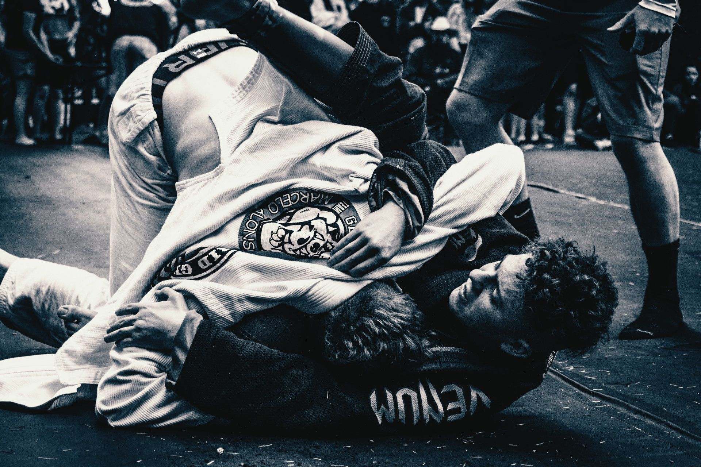

Closed Guard

Traditionally considered the fundamental guard in Brazilian Jiu-Jitsu, the closed guard is commonly referred to as a 50/50 position. Players of equal skill are considered to be in a neutral position, with no advantage going to either player.
Skilled closed guard players --notably Roger Gracie-- proved that this position is extremely advantageous to the bottom player and used it competitively to submit opponents on the world stage.

The burden of opening the guard belongs to the top position player and can be extremely hard to do against a closed guard specialist. The opponent's closed guard should be avoided if at all possible.